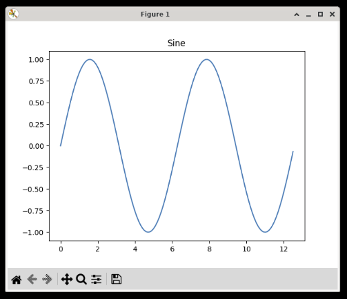

NumPy
NumPy is a powerful number processing library, used by data scientists due to it being able to process large amounts of data much faster than native Python. This package works well with data visualization packages like matplotlib.
Examples
Create and Add Matrices
import numpy
# Create a 4x4 matrix of ones
ones_mat = numpy.ones((4, 4))
# Create a default numpy random number generator
rg = numpy.random.default_rng(1)
# Create a 4x4 matrix of random numbers
random_mat = rg.random((4, 4))
# Add the two matrices together
added_mat = numpy.add(ones_mat, random_mat)
print(ones_mat)
print(random_mat)
print(added_mat)
Create a Sine Wave Graph with matplotlib
import numpy as np
import matplotlib.pyplot as plt
# Get x and y coordinates of sine wave
x = np.arange(0, 4*np.pi, 0.1)
y = np.sin(x)
# Make the graph
plt.plot(x, y)
plt.title('Sine')
# Show the figure.
plt.show()

Read more at numpy.org